Personal responsibility: how our habits affect the climate
Not everyone contributes equally to climate change. According to the International Institute for Applied Systems Analysis, the world’s wealthiest 10% are responsible for almost half of global warming since 1990. This is due to their high levels of consumption and lifestyles. Researchers calculated that each member of the world’s wealthiest 1%, mainly from the United States and China, has contributed 26 times more to global warming than the average person worldwide.
Every day brings choices. How we get to work, how much electricity we use, and what food and products we buy – all these choices directly affect greenhouse gas emissions. Together, these emissions make up our carbon footprint.
Carbon footprint
A carbon footprint is the total amount of greenhouse gases emitted directly or indirectly by a person, organisation, or product.
There are many greenhouse gases, each affecting the climate differently by trapping heat radiation emitted by Earth. To simplify calculations, their effects are expressed using a common measure – carbon dioxide (CO₂) equivalent. This standardised unit makes it easier to calculate and compare total greenhouse gas emissions.
Everyone has a carbon footprint. In impoverished Burundi, the average person’s carbon footprint is very small, at around 1 tonne of CO₂ equivalent per year. By comparison, the average carbon footprint of a US citizen exceeds 16.5 tonnes of CO₂ equivalent. In Russia, the figure varies considerably between cities. It reaches its highest levels in places where living standards are relatively high, winters are long and cold, and heating and electricity are supplied by coal-fired combined heat and power plants.
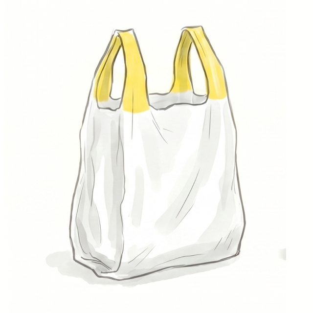
Plastic bag 33 grams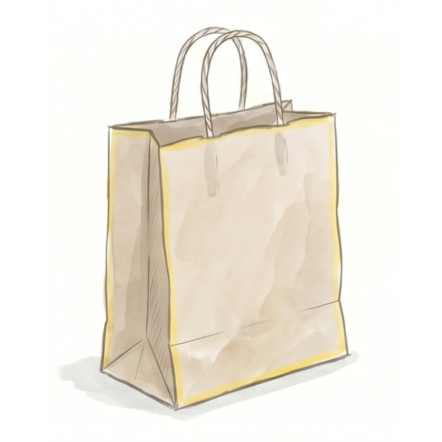
Paper bag 40–80 grams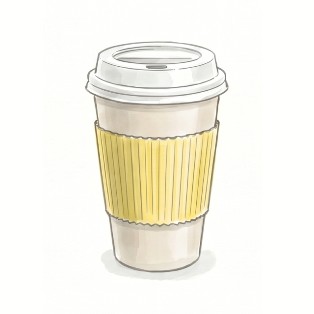
Cup of coffee 570 grams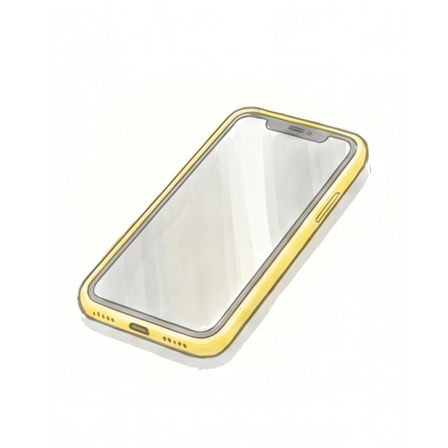
Smartphone (one hour of use per day) 1,250 grams per year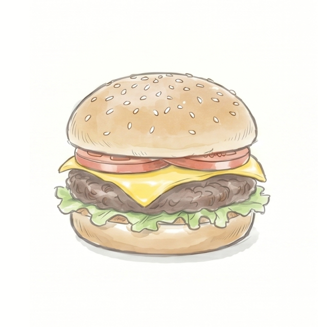
Beef burger 5,000 gramsValues are expressed in grams of CO₂ equivalent. Source: EcoSphera, 2020
Everything we do leaves a carbon footprint. The key is to pay attention to how much we consume and which resources we use. You can estimate your personal carbon footprint using online tools.
For example, the Carbon Footprint website offers a tool for calculating household greenhouse gas emissions.
For frequent travellers, it is also possible to calculate the carbon footprint of individual journeys. Specialised tools, such as the ICAO (International Civil Aviation Organisation) Carbon Emissions Calculator, Aeroflot’s calculator, and services such as Aviasales, can help you estimate CO₂ emissions from flights and other modes of transport.
Hover over the card
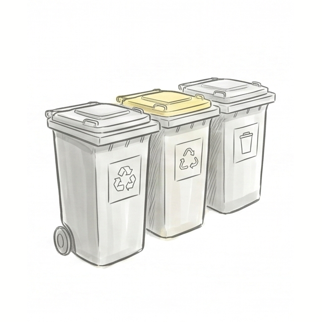
Separate waste collectionSeparating waste reduces organic waste sent to landfill and associated methane emissions, while saving energy by returning recyclable materials to the production cycle.
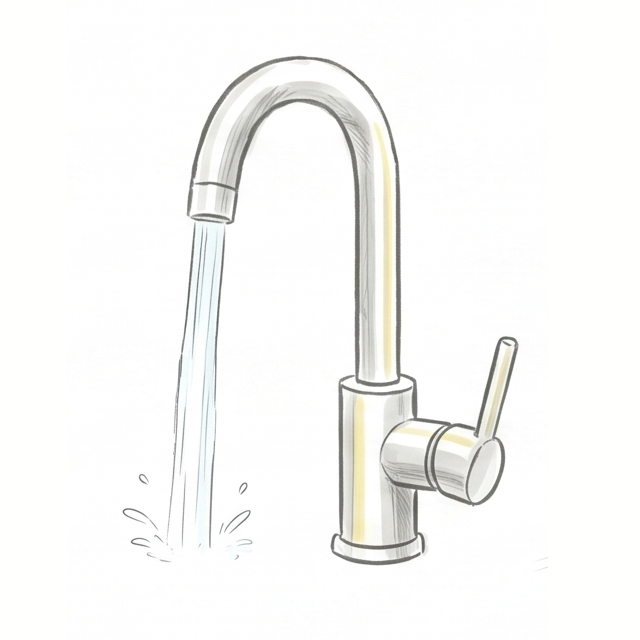
Resource stewardshipUsing resources more efficiently reduces unnecessary production and the associated greenhouse gas emissions throughout a product’s life cycle – from intensive agriculture and processing to transport and energy-intensive storage.
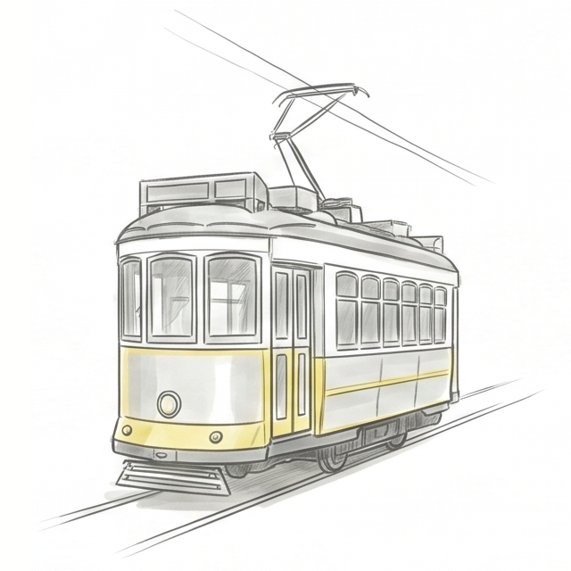
Switching to greener transportSwitching to low-carbon transport directly reduces GHG intensity by replacing internal combustion engines with energy-efficient systems that produce little or no direct emissions.
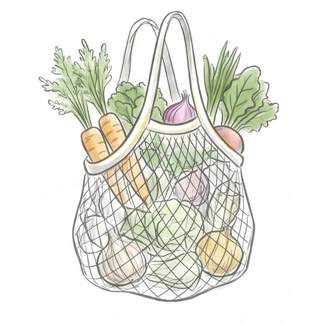
Avoiding disposable productsReplacing disposable products with reusable alternatives lowers the overall carbon intensity of consumption by avoiding emissions associated with repeated raw material extraction as well as the manufacturing and disposal of short-lived products.
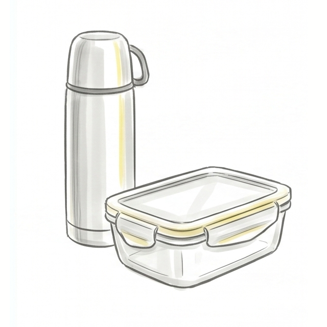
Energy efficiency at homeUsing energy more efficiently at home can substantially reduce energy consumption and minimise the indirect greenhouse gas emissions associated with generating the energy we use in everyday life.
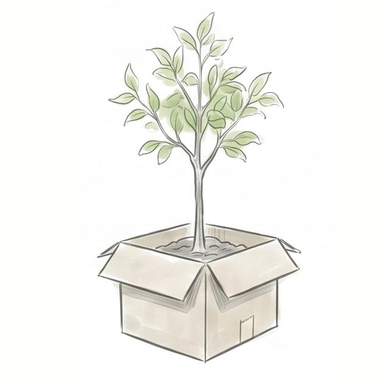
Digital hygieneRegularly clearing out digital storage and reducing unnecessary data transfers can ease the load on servers and data centres, cutting the energy consumption and carbon footprint associated with operating and cooling computing infrastructure.
Even indirect actions, such as supporting local brands and choosing responsible service providers, help drive a low-carbon future. As a result, every choice we make in our daily lives can make a real contribution to reducing global emissions.
The role of education: how knowledge helps tackle climate change
Quality education is a key lever for tackling climate change. Research shows that climate literacy directly influences people’s behaviour and their willingness to take action to reduce emissions and adapt to changing conditions.
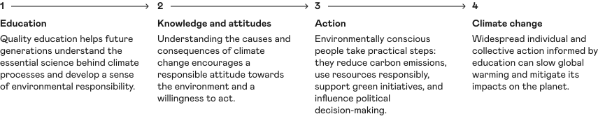
Quality education helps future generations understand the essential science behind climate processes and develop a sense of environmental responsibility.
Understanding the causes and consequences of climate change encourages a responsible attitude towards the environment and a willingness to act.
Environmentally conscious people take practical steps: they reduce carbon emissions, use resources responsibly, support green initiatives, and influence political decision-making.
Widespread individual and collective action informed by education can slow global warming and mitigate its impacts on the planet.
Demand for climate professionals is growing rapidly. An increasing number of companies are setting up dedicated departments to address climate-related issues. Managers need new knowledge to manage climate risks, while engineers need the skills to work with modern environmentally friendly technologies. Businesses and society alike need up-to-date, reliable knowledge to adapt successfully to changing realities.
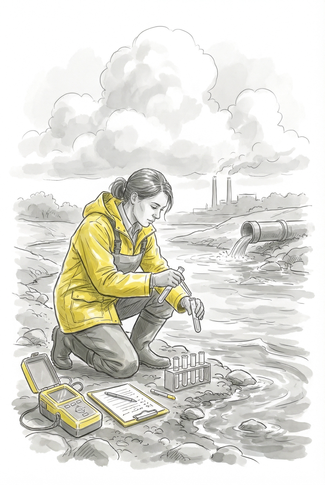
Conducting research to assess the impacts of human activities on ecosystems
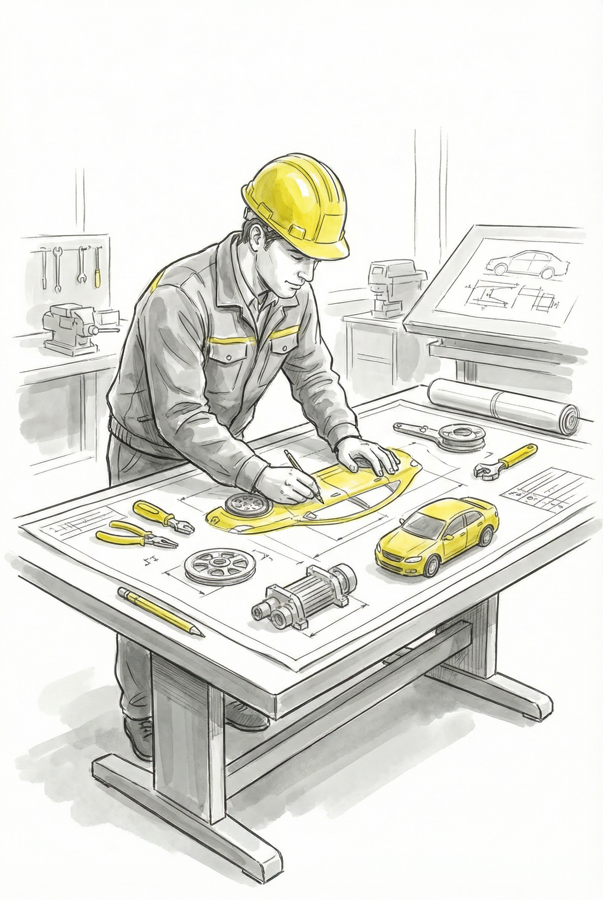
Developing and introducing technologies for environmentally friendly vehicles
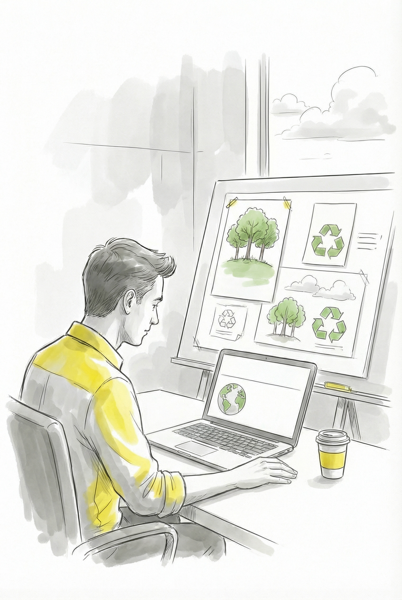
Launching information campaigns to raise environmental awareness
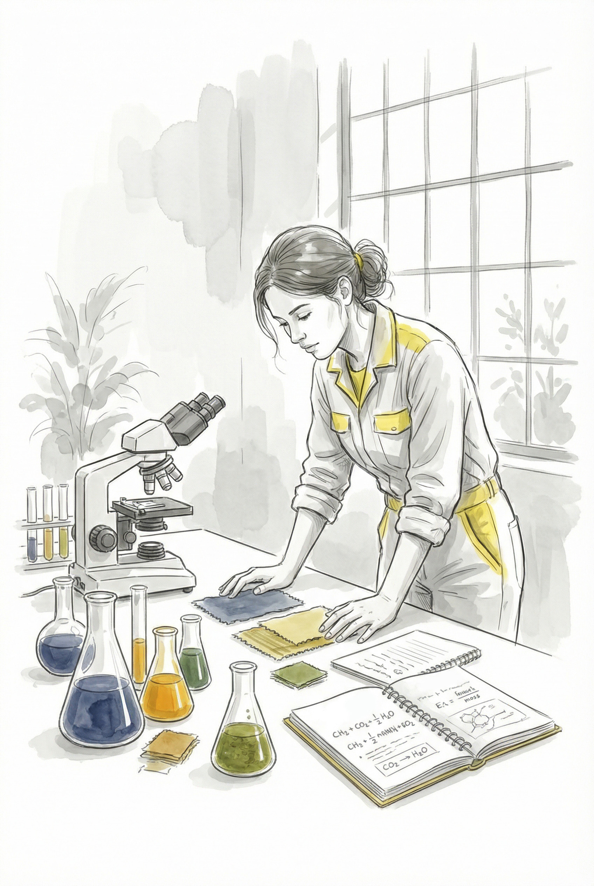
Assessing the environmental impacts of textile production and developing measures to reduce them
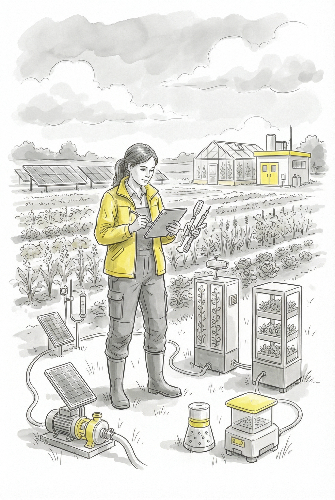
Developing and introducing environmentally friendly agricultural production technologies
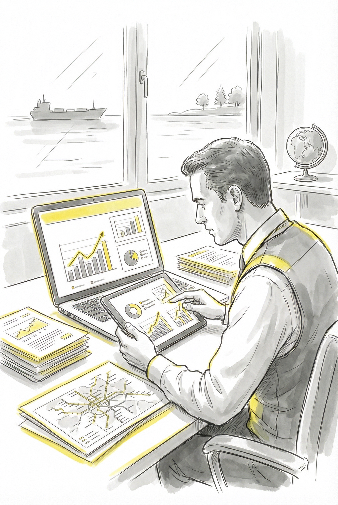
Assessing environmental impacts and developing measures to reduce emissions
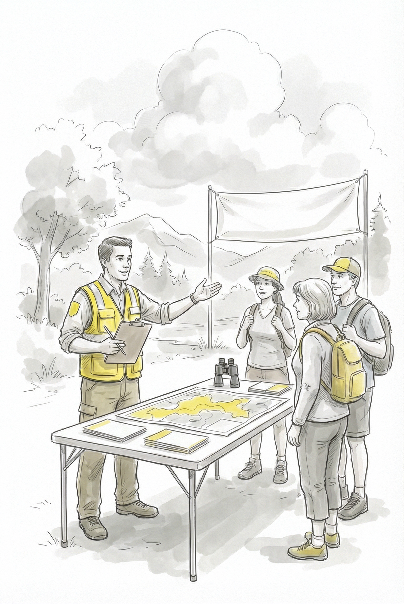
Organising activities to improve tourists’ environmental literacy
Climate justice – ensuring a just transition that enables social and economic transformation while addressing the root causes of climate change.
Russia supports the principles of climate justice, advocating recognition of national circumstances and the sovereign right of countries to determine their own pathways to low-carbon development. Russia also emphasises that the climate agenda must not be used as a means of exerting trade or economic pressure. At the same time, Russia advocates greater international cooperation on climate projects and technologies, as well as a just energy transition that takes account of energy security and economic development priorities.
Education for sustainable development: a global approach
Climate action is one of the key priorities of UNESCO’s global programme, Education for Sustainable Development: Towards achieving the SDGs (ESD for 2030). The programme goes beyond teaching theory, empowering people to make the world more sustainable through practical action. It focuses on global challenges such as climate change and social justice, and how our individual actions relate to them.
To make education an integral part of the international response to the climate crisis, UNESCO established the Greening Education Partnership. Over 80 countries and 1,300 organisations have joined the partnership, including UN agencies, social movements, and private-sector organisations.
Hover over the card
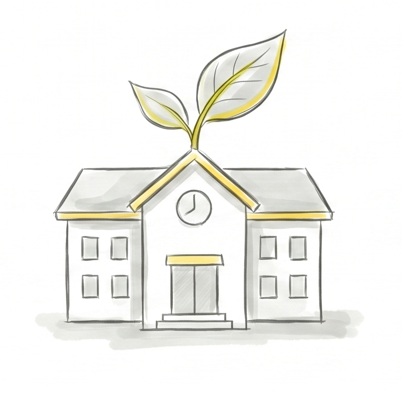
Greening educational institutionsSchools, colleges, and universities can receive special accreditation for adopting environmentally friendly practices.
Environmental and climate topics are incorporated into different subjects to help students understand the relevance of these issues to their future careers.
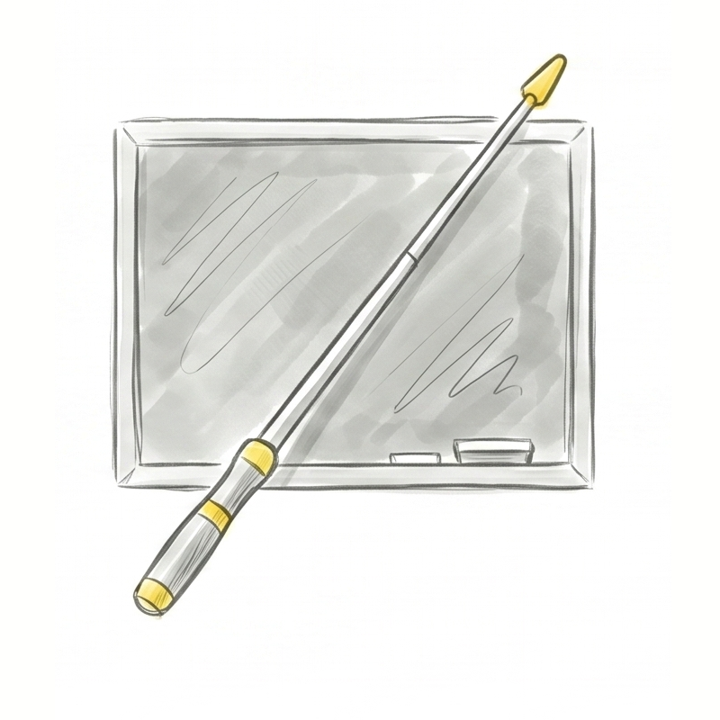
Training teachersTeachers are trained in modern teaching methods so they can explain climate change effectively and involve students in practical projects.
Climate education is made available to people of all ages through community centres and online courses.
A recent UNESCO report highlighted that education often focuses too heavily on theory without encouraging students to take action. To address this, UNESCO has developed two practical tools:
Greening curriculum guidance – a guide explaining what climate education should cover and how to incorporate environmental topics into lessons for learners aged 5 to 18 and beyond.
Green school quality standard – sets minimum requirements for educational institutions seeking to become environmentally sustainable. The standard recommends establishing environmental committees involving students and parents, conducting energy and water audits, and working with local communities to address local environmental challenges.
How progress in climate education is assessed
A 2024 report under the United Nations Framework Convention on Climate Change (UNFCCC) reaffirmed that achieving the goals of the Paris Agreement requires education, training, and public participation. These areas are brought together under the concept of Action for Climate Empowerment (ACE).
To assess progress at the national level, a dedicated project called Monitoring and Evaluating Climate Communication and Education (MECCE) was established. The project focuses on several key areas:
Hover over the card
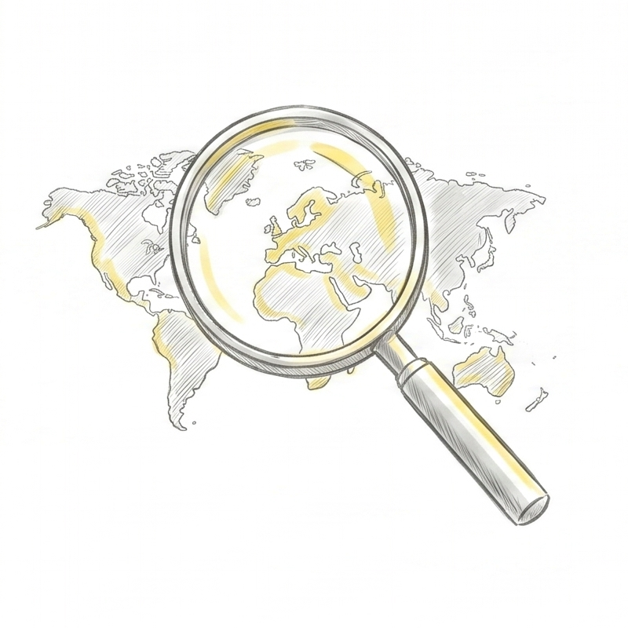
Data analysisThe project collects and visualises data on the state of climate education in different countries, allowing for comparability of progress.
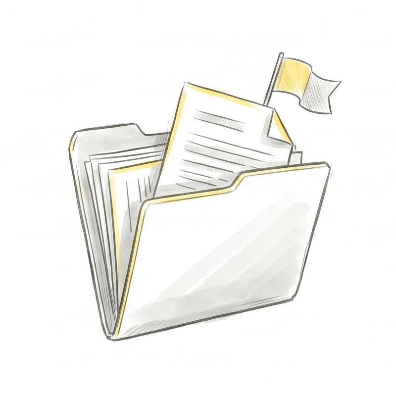
Country profilesA detailed profile is compiled for each country, providing information on legislation, budgets, and climate education programmes.
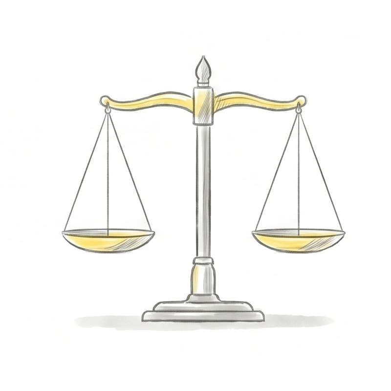
Comparative analysisMECCE helps countries track their progress towards the Sustainable Development Goals (SDGs).
Collaboration helps develop new educational materials and support policymaking in this area.
The MECCE platform offers interactive tools for analysing these data. These tools allow users to explore data on the quality of climate education and communication worldwide.
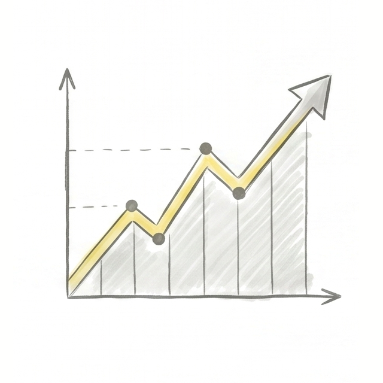
National climate conditions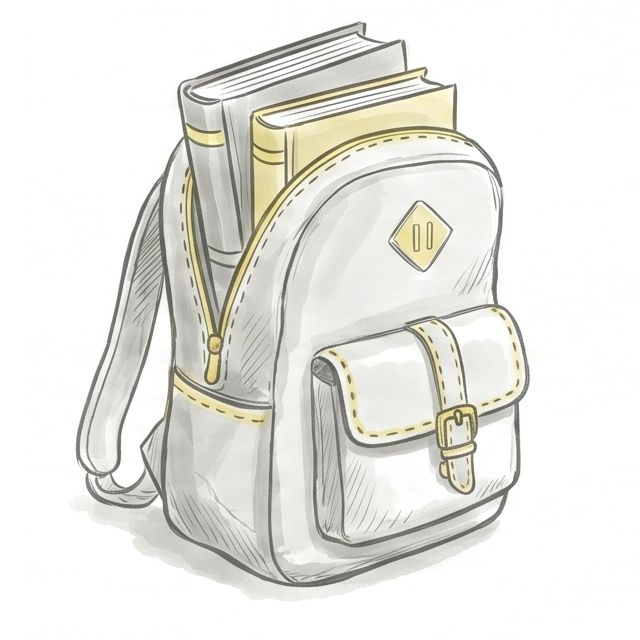
Climate education in schools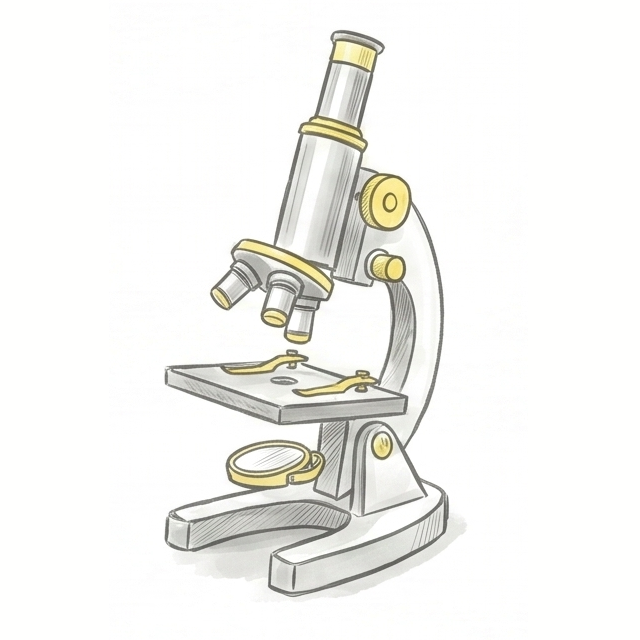
Higher education programmes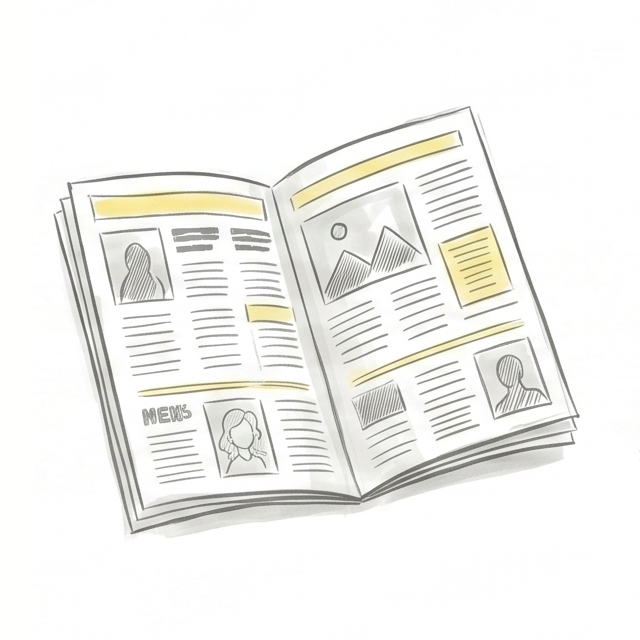
Public awareness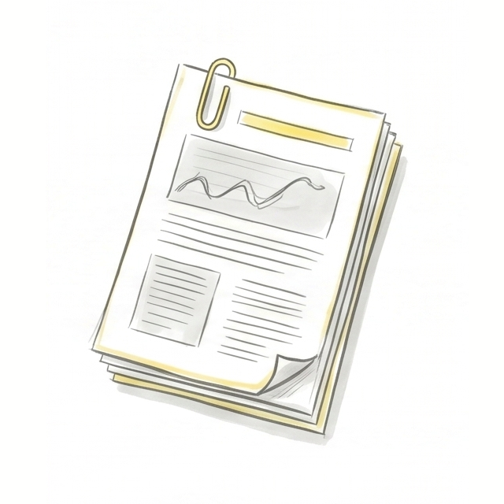
Monitoring and reportingClimate education and green jobs in Russia
Education and public awareness-raising are also recognised as key pillars of Russia’s climate policy. This is reflected in Russia’s Climate Doctrine.
How the government is building a talent pipeline:
- Training highly qualified researchers
- Providing training for senior university students at leading research institutions
- Sending talented young scientists and students on internships at leading research centres around the world
- Training diplomats and advisers to participate in international climate negotiations
Education is the first step. The next is choosing a career where you can make a meaningful contribution to addressing environmental challenges.
ucheba.ru
Explains what climate scientists do and lists more than 150 universities across Russia where you can study climatology.
Go to →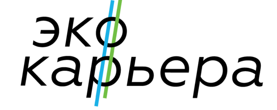
EcoCareer Lab
A social initiative helping people build careers in the green economy, find jobs, and connect with employers.
Go to →Climate protection career guide
Provides guidance on starting a career in environmental protection and sustainable development.
Go to →Atlas of Emerging Jobs
A guide to future-proof industries and jobs over the next 15–20 years.
Go to →Professional standards for climate specialists have already been developed and approved in Russia. This effort reflects a serious commitment from both the business sector and the government. The standards make the labour market more transparent and raise the quality of graduates.
You have now completed the full journey from understanding the science behind climate to exploring the actions you can take personally. You can now see that climate change presents a complex range of challenges affecting nature, the economy, and politics.
Addressing this global issue requires action at every level – from governments to each of us. Knowledge is the first step towards change. We hope our project has helped you take that step.
Share what you have learnt – knowledge is more valuable when shared.